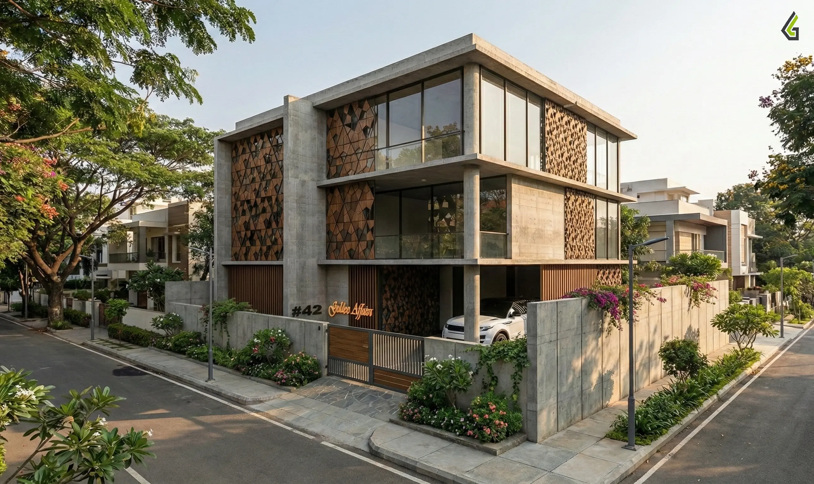
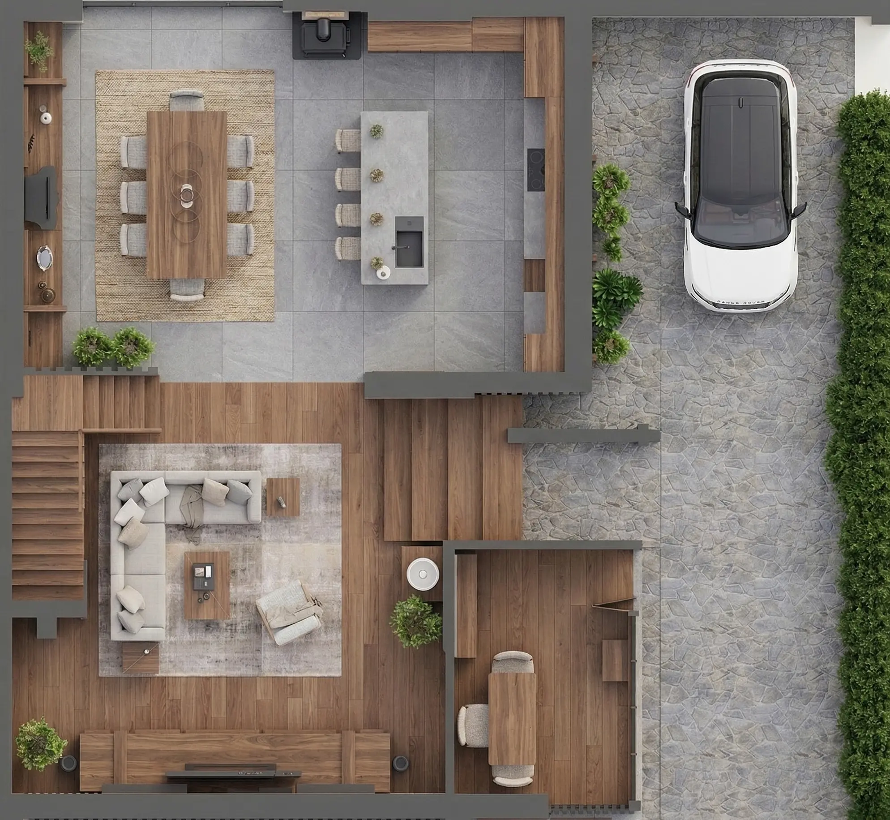
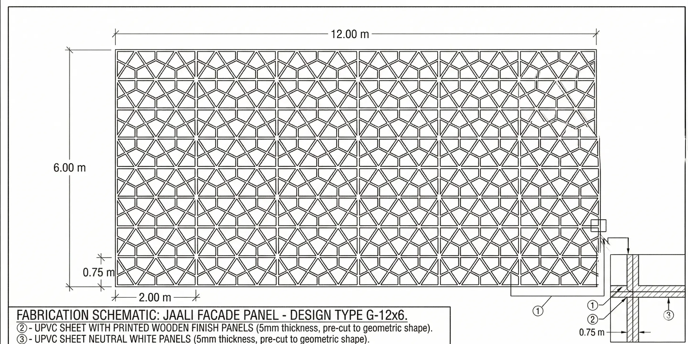
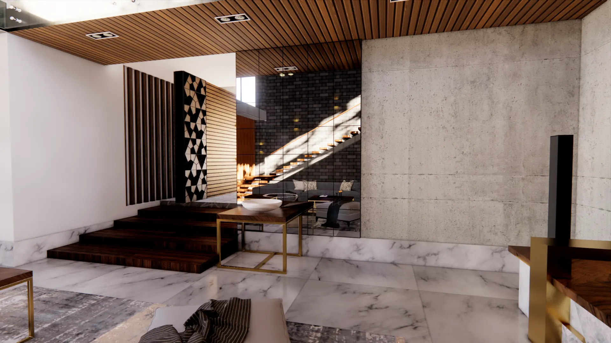
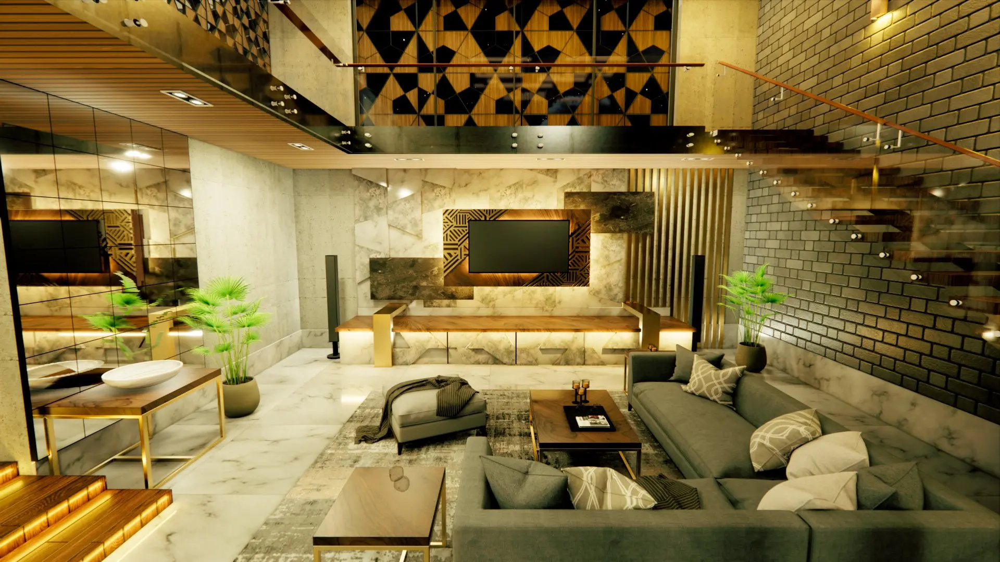
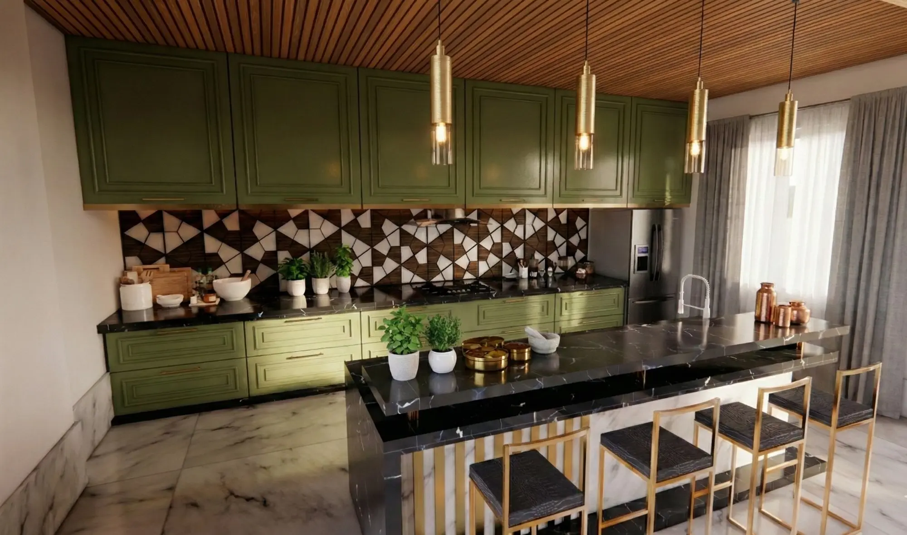
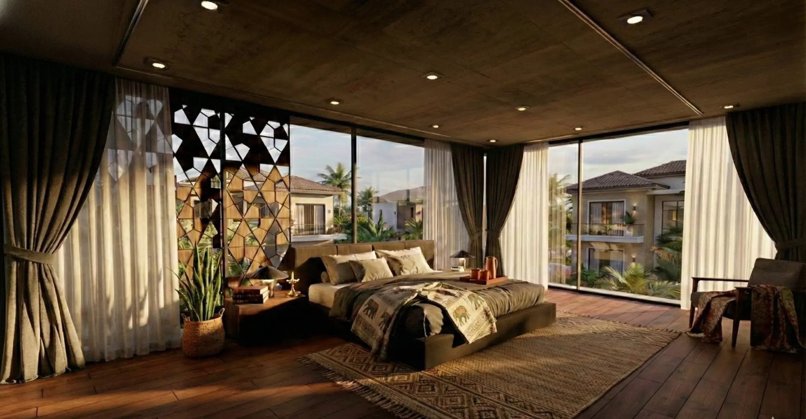

The Villa Project:
Minimalist Architecture
in Bangalore

01 / The Client's Brief What the client needed
The client — a real estate developer with an eye for contemporary design — came to Gridline with a clear mandate: a premium villa that would read as unambiguously modern yet feel rooted in the local residential typology of Bangalore's newer residential corridors.
The brief called for expansive glazing that blurred the boundary between inside and out, a restrained material palette anchored in natural textures, and spatial flow that felt generous without waste. At 2,445 square feet across two floors, every square metre had to justify itself.
"The architecture should feel like it belongs to the landscape — not imposed on it."
Vastu compliance was a secondary brief requirement. Rather than treating it as a constraint, our team resolved orientation, room adjacencies, and threshold placements early in the concept phase so that Vastu principles and spatial efficiency reinforced each other.
02 / The Design Challenge Where the difficulty lived
The jaali screens — a defining element of the facade — presented a fabrication challenge that went beyond standard decorative masonry. The brief required the jaali to incorporate embedded wPVC boards within the screen body: a composite assembly where the perforated pattern is formed through a combination of masonry voids and flush-set wPVC panels, creating a layered depth effect while providing weather resistance at the openings. Coordinating the masonry bond pattern with the wPVC board dimensions, ensuring structural continuity across embedded panels, and detailing the fixing of each board into the surrounding masonry without visible fastenings required iterative fabrication drawings and close coordination with the contractor prior to casting.
The most spatially complex requirement was the atrium: the client wanted a space that genuinely descends from the outside environment — not simply a recessed entrance, but a spatial experience of arrival in which the home sits below the surrounding ground plane, creating a cave-like sense of enclosure and shelter as one enters. Achieving this on a flat urban plot without excavation into the water table or an expensive basement structure required a rethinking of where the datum was established.
The third challenge was the office space. It had to be outside the home — functionally and perceptually separate, with its own entrance — yet immediately accessible from within the residence without requiring the occupant to step outdoors. This is a programme contradiction that cannot be resolved purely through planning; it requires a section solution.
03 / Our Solution How Gridline delivered
The descent effect was achieved without excavation. The outer plinth level of the building was raised by 4 feet above the site datum — a decision that inverts the conventional relationship between building and ground. From the street, the entrance approach reads as a descent into the home rather than a step up: visitors walk down from the raised approach path into the atrium zone, which sits at a level that feels sheltered and enclosed relative to the surrounding garden. The spatial sensation is of entering a protected inner world — the "cave-like descending effect" the client described — achieved entirely through plinth manipulation rather than construction below ground.
To reinforce this effect and prevent the raised plinth from reading as an abrupt wall, the lawn soil level was graduated gradually from the site boundary inward — rising incrementally toward the building face so that the transition from ground plane to plinth appears continuous from a distance. From the garden, the ground appears level; only on approach does the descent reveal itself. This landscape section decision was coordinated with the architectural section and detailed on the working drawings as a graded fill specification with a finished level schedule.
The office space was resolved in section by positioning it at the outer edge of the plinth — accessible directly from the street via its own entrance at the raised level, yet connected internally to the home through a short corridor at the same floor datum. The two entrances share the same raised plinth, so the office occupant and the home occupant operate independently without one needing to pass through the other's domain, while the shared section keeps the walk between them to under ten steps. Floor plans, sections, elevations, and the jaali fabrication drawings were all developed in AutoCAD with photorealistic Enscape renders used to communicate the spatial descent sequence to the client before any construction decisions were finalised.

From sketch to delivered render






Need a similar structure designed?
Whether you're a developer planning a residential villa, a builder needing structural drawings, or an institution requiring IS-code-compliant engineering — Gridline delivers with zero subcontracting and direct engineer access.